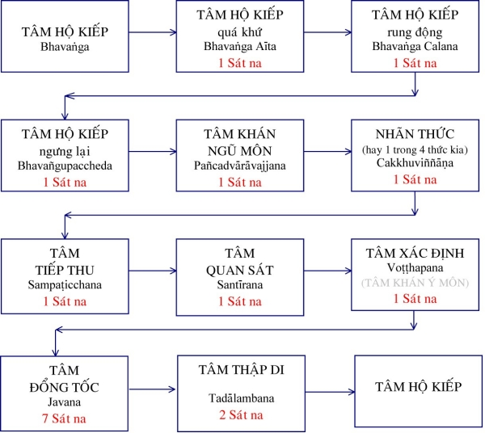
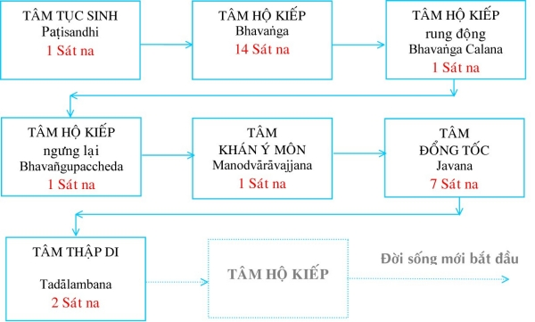
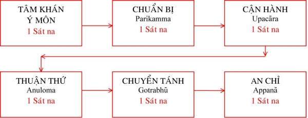
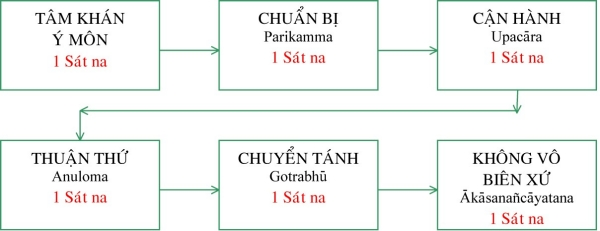
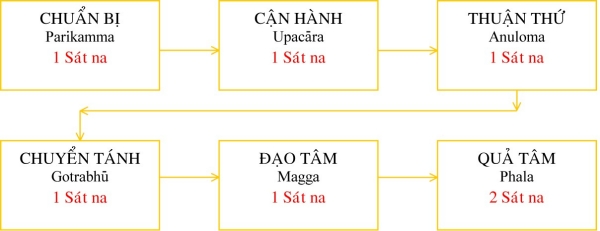

|
PHẬT GIÁO NGUYÊN THỦY THERAVÀDA VI DIỆU PHÁP BAN HOẰNG PHÁP |
|
BuddhaSasana Home Page |
Vietnamese, with Unicode VU Times or CN-Times font |
|
|
PHẬT GIÁO NGUYÊN THỦY THERAVÀDA VI DIỆU PHÁP BAN HOẰNG PHÁP |
|
Xin lưu ý: Cần có phông UnicodeViệt-Phạn VU Times hay CN-Times cài vào máy để đọc các chữ Pàli. |
|
BÀI 18. LỘ TRÌNH TÂM Là tiến trình sanh diệt của tâm. Tùy theo trường hợp sanh khởi lộ trình tâm được phân ra lộ dài, lộ ngắn, lộ lớn, lộ nhỏ. Tùy theo nơi chốn sanh khởi, lộ trình tâm được phân biệt làm hai loại: lộ trình qua ngũ môn và lộ trình qua ý môn. Ðơn vị đo lường trong lộ trình tâm được gọi là tâm Sát Na. A- Tâm Sát na của Lộ trình tâm. Trong trạng thái thụ động, khi tâm không bị kích thích bởi đối tượng, được gọi là tâm Hộ kiếp (Bhavaṅga). Khi bị kích thích bởi đối tượng thì một tâm sẽ khởi lên trên mặt tâm Hộ kiếp, rồi chìm xuống để một tâm khác khởi lên (thông thường chúng ta không thể giữ mãi một tâm không cho chìm vào tâm Hộ kiếp). Như vậy, đời sống của một tâm bao gồm 3 giai đoạn: Sanh (Uppāda), Trụ (Ṭhiti) và Diệt (Bhaṅga). Ðời sống đó được gọi là tâm sát na (Cittakhana). I) Lộ trình qua ngũ môn. Là dòng tâm thức sinh khởi qua năm căn môn: Nhãn môn, Nhĩ môn, Tỷ môn, Thiệt môn và Thân môn. Lộ ngũ môn được phân thành hai loại: 1) Lộ ngũ môn bình nhật. Lộ ngũ môn bình nhật là lộ trình tâm xuyên qua ngũ môn để tiếp thu và xử sự với cảnh trong đời sống hàng ngày. Lộ ngũ môn bình nhật được phân ra làm bốn loại. a. Lộ ngũ môn cảnh rất lớn Là lộ trình tâm được diễn tiến đầy đủ trong 17 tâm sát na. 1- Khi một đối tượng vào trong phạm vi nhận thức của tâm thức, qua một trong năm cửa, một sát na của tâm Hộ kiếp được trôi qua. Sát na ấy được gọi là Quá khứ Hộ kiếp (Atītabhavaṅga). Tức là trạng thái tâm chủ quan sanh diệt đồng thời với cảnh sắp đến. 2- Tâm Hộ kiếp bị kích thích và rung động trong một tâm sát na gọi là sự rung độâng của Hộ kiếp (Bhavaṅgacalana). Tức là trạng thái tâm chủ quan bị cảnh mới chi phối. 3- Rồi tâm Hộ kiếp ngưng chuyển động trong một tâm sát na gọi là sự dừng đứng của Hộ kiếp (Bhavaṅgupaccheda). Tức là trạng thái tâm chủ quan chấm dứt, nhường chỗ cho những tâm khách quan khởi lên để tiếp thu và xử sự với cảnh mới. Khi đó các tâm sát na khác sẽ khởi lên và chìm xuống một cách mau lẹ như sau. 4- Tâm Khán ngũ môn (Pañcadvāravajjana) tức là tâm khách quan khởi lên hướng về đối tượng (cảnh mới hiện đến) và chìm xuống trong một tâm sát na. 5- Nhãn thức (Cakkhuviññāṇa) hay một trong bốn thức kia sẽ khởi lên trong một tâm sát na. 6- Tâm Tiếp thu (Sampaṭicchana) là tâm khách quan khởi lên bắt lấy cảnh trong một tâm sát na. 7- Tâm Quan sát (Santīrana) tức là tâm khách quan khởi lên xem xét cảnh (điều tra đối tượng) trong một tâm sát na. 8- Tâm Phân Ðoán (Voṭṭhapana) tức tâm Xác định đối tượng là vật tốt hay xấu, sạch hay dơ... (đây chính là công tác của tâm Khán Ý môn) khởi lên trong một tâm sát na. 9. – 15. Tâm Ðổng Tốc (Javana) tức là tâm xử sự với cảnh (còn gọi là tâm hưởng cảnh) khởi lên liên tiếp 7 tâm sát na. Chính đây là thời điểm quan trọng hơn cả trong toàn lộ trình vì các nghiệp thiện hoặc ác được tạo ra trong lúc này. Trong 7 sát na này, sát na thứ nhất tạo nghiệp, kết quả trong đời hiện tại, gọi là Hiện báo nghiệp; sát na thứ bảy, tạo nghiệp, kết quả trong đời sau, gọi là Sanh báo nghiệp; năm sát na còn lại, tạo nghiệp, kết quả từ đời kế tiếp cho tới lúc chứng Vô dư Niết-Bàn, gọi là Hậu báo nghiệp. 16. – 17. Tâm Thập di (Tadālambana) là tâm hưởng cảnh dư của tâm Ðổng tốc nhưng không có khả năng tạo nghiệp (vì những tâm làm việc Thập Di hoàn toàn là tâm quả). Tâm này khởi lên để gìn giữ và ghi nhận cảnh vào trong tiềm thức. Tâm này lập đi lập lại trong hai sát na. Lộ ngũ môn cảnh rất lớn lại được chia ra làm ba lộ: Lộ Ngũ Môn cảnh rất lớn chót Thập Di: là lộ trình tâm hiện khởi qua ngũ môn đầy đủ như đã mô tả ở trên. Lộ Ngũ Môn cảnh rất lớn chót Ðổng Tốc: là lộ trình tâm khởi qua ngũ môn nhưng chỉ có 15 tâm sát na vì sau khi tâm Ðổng Tốc diệt thì tâm Hộ kiếp tiếp tục khởi lên chứ không có tâm Thập Di. Lộ Ngũ môn cảnh rất lớn chót Hộ Kiếp Khách: là lộ trình tâm khởi qua ngũ môn, lộ tâm nầy sau khi tâm Ðổng Tốc diệt thì tâm Hộ Kiếp khách quan khởi lên trong một sát na để tiếp cảnh trước khi tâm Hộ Kiếp chủ quan hiện lên. b. Lộ ngũ môn cảnh lớn Là lộ trình tâm chỉ hiệân khởi đến hết 7 tâm sát na của tâm Ðổng tốc. Nhưng khởi đầu của lộ trình tâm có tới 2 hay 3 sát na tâm Hộ Kiếp quá khứ (không như bình thường chỉ có 1 tâm sát na mà thôi). Trong đoạn cuối của lộ trình tâm nầy, có thể có tâm Hộ Kiếp Khách sinh khởi sau tâm Ðổng Tốc. c. Lộ ngũ môn cảnh nhỏ Là dòng tâm thức khởi lên đến sát na tâm Phân Ðoán (tâm Xác Ðịnh) rồi diệt. Tiếp theo tâm Phân Ðoán là tâm Hộ Kiếp chứ không có tâm Ðổng Tốc, do đó lộ tâm này không thể tạo nghiệp. d. Lộ ngũ môn cảnh rất nhỏ Là dòng tâm thức hoàn toàn là tâm chủ quan (Hộ Kiếp) chứ không có tâm khách quan sinh khởi. Trong lộ nầy, tâm Hộ Kiếp chỉ rung động nhiều lần vì bị cảnh chi phối, nhưng chỉ rung động rồi trở lại trạng thái bình thường chứ không có lộ tâm khởi lên. LỘ NGŨ MÔN Cảnh rất lớn. 
2) Lộ ngũ môn cận tử. Là dòng tâm thức diễn tiến qua năm căn môn trước giờ phút lâm chung. Lộ ngũ môn cận tử được chia làm hai lộ: (i) chót Thập Di, (ii) chót Ðổng tốc. Trong hai lộ ấy được chia ra làm hai trường hợp: (i) có xen Hộ Kiếp rồi mới tử, (ii) không xen Hộ Kiếp. Dòng tâm thức diễn biến như sau: - Hộ Kiếp quá Khứ Chú thích: trong lộ trình tâm qua ngũ môn trong giờ cận tử thường được trình bày bằng hai lộ trình tâm liên tục: Lộ Cận Tử và Lộ Tục Sinh. Bởi lẽ chúng sanh sau khi chết sẽ được tái sanh ngay tức khắc (đúng theo kinh điển thì sự tục sinh nối tiếp liền sau khi tử chứ không có thân trung ấm để chờ đợi đi tái sanh). Thường lệ thì tâm Ðổng tốc phải có đủ 7 sát na, nhưng khi sắp chết hay lúc bị ngất xỉu hoặc khi Ðức Phật hiện song thông (một lần hiện cả nước lẩn lửa) thì tâm Ðổng Tốc chỉ có 5 sát na. Lúc Ðức Phật hiện song thông vì quá cắp bách bởi đồng thời bắt cả hai đề mục nước và lửa; còn đối với người bị ngất xỉu thì dòng tâm thức bị yếu đi nên không có đủ 7 sát na như thường lệ. Tâm Tử là sát na cuối cùng (tâm Hộ Kiếp diệt lần chót) của đời sống cũ. Tâm Tục Sinh là sát na đầu tiên của kiếp sống mới. Theo định luật, khi tục sinh phải diễn tiến đủ 14 sát na tâm Hộ Kiếp và 7 sát na tâm Ðổng Tốc trong lộ Tục sinh. Lý do tục sinh phải là tâm Tham, dù là vị Bồ Tác kiếp chót cũng vậy, các vị Bồ Tác tục sinh cũng do nghiệp lực chớ không phải là chí nguyện hay thị hiện như một vài lý thuyết hoang đường nêu lên. LỘ NGŨ MÔN Lộ trình tâm qua ngũ môn trong giờ Cận tử.
Lộ trình tâm lúc tái sanh 
II) Lộ trình qua ý môn. Lộ Ý Môn là trạng thái sinh diệt của dòng tâm thức diễn tiến trong nội tâm chứ không phải do đối tượng từ bên ngoài. Lộ Ý Môn được phân làm 2 loại: II.1. Lộ Ý Môn Thông Thường Là lộ trình tâm không có Ðắc Thiền, Ðắc Ðạo, Hiện Thông, Niết-Bàn, ... Ðược chia làm hai loại: 1) Lộ Ý Môn Bình Nhật Là dòng tâm thức diễn tiến trong đời sống hằng ngày. Ðược chia thành bốn loại: a. Cảnh rất rõ Dòng tâm thức lộ ý môn bình nhật cảnh rất rõ diễn tiến như sau: Hộ Kiếp quá khứ, Hộ kiếp rúng động, Hộ kiếp dừng lại, Khán ý môn, tâm Ðổng Tốc (7 sát na), tâm Thập Di (2 sát na). Lộ ý nầy có 10 sát na, 41 thứ tâm, 3 chặn tâm, 8 thứ người và 11 cõi. (10 sát na là: Khán ý môn, 7 Ðổng Tốc, 2 Thập Di. 41 thứ tâm là: Khán ý môn, 29 tâm Ðổng Tốc Dục giới (12 tâm bất thiện, Ưng Cúng sinh tiếu, 8 thiện và 8 Duy tác Dục giới Tịnh hảo) và 11 tâm Thập Di (3 tâm Quan Sát và 8 tâm Quả Tịnh hảo). 3 chặn tâm là: Khán ý môn, Ðổng Tốc và Thập Di. 8 thứ người là: 4 phàm nhân (người Khổ, người Lạc, người nhị nhân và người tam nhân) và 4 thánh quả (người Sơ quả, người Nhị quả, người Tam quả và người Tứ quả). 11 cõi là 11 cõi Dục giới). b. Cảnh rõ Lộ ý môn bình nhật cảnh rõ cũng giống như cảnh rất rõ nhưng không có 2 sát na tâm Thập Di. c. Cảnh không rõ Ở lộ nầy dòng tâm thức chỉ diễn tiến tới tâm Khán ý môn chứ không có tâm Ðổng Tốc. d. Cảnh rất không rõ Ở lộ nầy thì tuy ý thức bị cảnh chi phối, nhưng cảnh không thể hiện vào, vì thế nên Hộ Kiếp chỉ rúng động vài sát na rồi trở lại bình thường. Lộ trình qua Ý MÔN: Ðối tượng rất rõ ràng.
2) Lộ Ý Môn Cận Tử Lộ Ý Môn Cận Tử là dòng tâm thức khởi lên trong tâm thức lúc lâm chung. Ðược chia làm hai loại: a. Tử khi còn tục sinh Lộ Ý Môn Cận Tử khi còn tục sinh diễn tiến như sau: Hôï Kiếp quá khứ, Hộ Kiếp rúng động, Hộ Kiếp ngưng lại, Khán ý môn, tâm Ðổng Tốc (5 sát na), tâm Thập Di (2 sát na), Hộ Kiếp, Tâm Tử, tâm Tục Sinh, tâm Hộ Kiếp (14 sát na), Hộ Kiếp rúng động, Hộ Kiếp ngưng lại, Khán ý môn, tâm Ðổng Tốc (7 sát na), tâm Thập Di (2 sát na), Hộ Kiếp, .... Lộ trình tâm này có 8 cái, 32 thứ, 3 chặn, 7 người và 11 cõi. (8 cái là: 1 sát na tâm Khán ý môn, 5 sát na tâm Ðổng Tốc, 2 sát na tâm Thập Di. 32 thứ là: Khán ý môn, 20 tâm Ðổng Tốc Dục giới (12 tâm bất thiện và 8 tâm Thiện Tịnh hảo) và 11 tâm Thập Di (3 tâm Quan Sát và 8 tâm Quả Tịnh hảo). 3 chặn tâm là: Khán ý môn, Ðổng Tốc và Thập Di. 8 thứ người là: 4 phàm nhân (người Khổ, người Lạc, người nhị nhân và người tam nhân) và 4 thánh quả (người Sơ quả, người Nhị quả, người Tam quả và người Tứ quả). 11 cõi là 11 cõi Dục giới). b. Lộ Niết-Bàn. Lộ Ý Môn Cận tử Niết-Bàn diễn tiến như sau: Hôï Kiếp quá khứ, Hộ Kiếp rúng động, Hộ Kiếp ngưng lại, Khán ý môn, tâm Ðổng Tốc (5 sát na), tâm Thập Di (2 sát na, hoặc không có), Hộ Kiếp (hoặc không có), Niết-Bàn. Lộ này có 8 cái, 21 thứ, 3 chặn, 1 người, 7 cõi. (8 cái là: 1 sát na tâm Khán ý môn, 5 sát na tâm Ðổng Tốc, 2 sát na tâm Thập Di. 21 thứ là: Khán ý môn, tâm Ưng Cúng vi tiếu, 8 tâm Duy Tác Dục giới và 11 tâm Thập Di (3 tâm Quan Sát và 8 tâm Quả Tịnh hảo). 3 chặn tâm là: Khán ý môn, Ðổng Tốc và Thập Di. 1 người là A-La-Hán. 7 cõi là 1 cõi người và 6 cõi trời). II.2. Lộ Ý Môn Ðặc Biệt Lộ Ý Môn Ðặc biệt là lộ trình tâm Ðắc Thiền, Ðắc Ðạo, Hiện Thông, Nhập Thiền, Niết-Bàn. 1) Lộ Tâm Ðắc Thiền Lộ trình tâm dược diễn tiến như sau: Hôï Kiếp quá khứ, Hộ Kiếp rúng động, Hộ Kiếp ngưng lại, Khán ý môn, Chuẩn bị, Cận Hành, Thuận Thứ, Bỏ Bực, Thiền, Hộ Kiếp. Lộ này có 6 cái, 27 thứ, 2 chặn, 5 người, 26 cõi. Chú thích: 6 cái là: Khán ý môn, Chuẩn bị, Cận Hành, Thuận Thứ, Bỏ Bực và 1 sát na tâm Thiền. 27 thứ là: Khán ý môn, 4 tâm Thiện Dục giới hợp trí, 4 tâm Duy tác Dục giới hợp trí, 9 tâm Thiện Ðáo Ðại và 9 tâm Duy Tác Ðáo Ðại. 2 chặn là Khán ý môn và Ðổng Tốc. 5 người là 1 người phàm tam nhân và 4 người tứ thánh quả. 26 cõi là 31cõi trừ cõi Vô Tưởng và 4 cõi Khổ. Chuẩn bị: là trạng thái tâm sắp sửa tiến tới một loại tâm cao hơn (tâm Thiền). Cận Hành: là trạng thái tâm gần đạt đến tâm thiền. Thuận Thứ: là trạng thái tâm thích hợp với sát na trước và nhu thuận với sát na sau. Bỏ Bực: là trạng thái tâm dứt bỏ tâm Dục giới để phát triển tâm thiền. Thiền: là trạng thái tâm an trú trong một đề mục, thiêu đốt các phiền não (đúng ra Thiền chỉ có thể dập tắt các phiền não một cách tạm thời). Ðối với người Huệ yếu, thì dòng tâm thức khi đắc thiền phải diễn tiến đũ 6 giai đoạn như trên; còn đối với người Huệ mạnh thì chỉ có 5 giai đoạn vì giai đoạn Chuẩn Bị không có. 2) Lộ Tâm Ðắc Ðạo Là lộ tình tâm của người chứng ngộ 4 Ðạo và 4 Quả. Lộ tâm Ðắc Sơ Ðạo diễn tiến như sau: Hôï Kiếp quá khứ, Hộ Kiếp rúng động, Hộ Kiếp ngưng lại, Khán ý môn, Chuẩn bị (hoặc không có nếu Huệ mạnh), Cận Hành, Thuận Thứ, Bỏ Bực, Ðạo, Quả (2 sát na). Lộ này có 8 cái, 15 thứ, 2 chặn, 3 người, 17 cõi. Chú thích: 8 cái là: Khán ý môn, Chuẩn bị, Cận Hành, Thuận Thứ, Bỏ Bực, Ðạo và 2 sát na tâm Quả. 15 thứ là: Khán ý môn, 4 tâm Thiện Dục giới hợp trí, 5 tâm Ðạo và 5 tâm Quả. 2 chặn là Khán ý môn và Ðổng Tốc. 3 người là: người phàm tam nhân, người Sơ Ðạo và người Sơ quả. 17 cõi là cõi người, 6 cõi trời Dục giới, 3 cõi Sơ thiền, 3 cõi nhị thiền, 3 cõi tam thiền và cõi Tứ thiền Quảng Quả. Lộ tâm Ðắc Tam Ðạo diễn tiến như sau: Hôï Kiếp quá khứ, Hộ Kiếp rúng động, Hộ Kiếp ngưng lại, Khán ý môn, Chuẩn bị, Cận Hành, Thuận Thứ, Bỏ Bực, Ðạo, Quả (2 sát na). Lộ này có 8 cái, 35 thứ, 2 chặn, 7 người, 26 cõi. Chú thích: 8 cái là: Khán ý môn, Chuẩn bị, Cận Hành, Thuận Thứ, Bỏ Bực, Ðạo và 2 sát na tâm Quả. 35 thứ là: Khán ý môn, 4 tâm Thiện Dục giới hợp trí, 30 tâm Siêu thế (trừ 5 tâm Sơ Ðạo và 5 tâm Sơ Quả). 2 chặn là Khán ý môn và Ðổng Tốc. 7 người là: 4 Quả và 3 Ðạo (trừ người Sơ Ðạo). 26 cõi là 31cõi trừ cõi Vô Tưởng và 4 cõi Khổ. 3) Lộ Tâm Nhập Thiền An chỉ (Appanā): nhứt tâm trên đối tượng gọi là An Chỉ (Ekaggaṃ cittaṃ ārammane appenti). Ở lộ này, dòng tâm thức an trú vào đề mục, tuy dòng tâm thức sanh diệt nhiều lần nhưng vẫn đồng một thứ tâm. Lộ này có 2 loại: Nhập Thiền hợp thế và Nhập Thiền Cơ. Thiền hợp thế là Thiền Sắc giới và Thiền Vô Sắc giới; còn Thiền Cơ là thiền nhập để làm căn bản hiện thần thông. Thiền Cơ chỉ nhập được bằng Ngũ Thiền Sắc giới mà thôi. Dòng tâm thức để nhập hai loại thiền này diễn tiến như sau: Hôï Kiếp quá khứ, Hộ Kiếp rúng động, Hộ Kiếp ngưng lại, Khán ý môn, Chuẩn bị, Cận Hành, Thuận Thứ, Bỏ Bực, Thiền (1 trong 18 tâm thiền hiệp thế). 4) Lộ Tâm Hiện Thông Là dòng tâm thức diễn tiến khi Diệu Trí (Abhiññā, Thắng Trí) phát sanh để làm các việc sau: Thiên Nhãn Thông: thấy rõ các sắc dù sắc thô, sắc tế, sắc tốt, sắc xấu, sắc xa, sắc gần, sắc bên trong, sắc bên ngoài, sắc quá khứ, sắc hiện tại, sắc vị lai, ... Thiên Nhãn Thông đều thấy rõ. Thiên Nhĩ Thông: tai nghe rõ các thứ tiếng, dù tiếng lớn, dù tiếng nhỏ, tiếng xa, tiếng gần, tiếng tốt, tiếng xấu, tiếng quá khứ, tiếng hiện tại, tiếng vị lai, ... Thiên Nhĩ Thông đều nghe được. Tha Tâm Thông: biết được tâm của kẻ khác, nhưng đối với Ðạo Quả thì chỉ biết được tâm của những người đồng bực hoặc thấp hơn chứ không thể biết được tâm của những người chứng ngộ cao hơn. Túc Mạng Thông: nhớ lại được nhiều kiếp xa xưa. Sanh Tử Thông: biết rõ những người đang có mặt từ đâu sanh ra và biết rõ những người đã chết sẽ tục sinh ở cõi nào. Thần Thông: có thể biến hiện ra nhiều hình thức như bay trên hư không, đi trên nước, di xuyên qua vách, chun xuống đất, ... Lậu Tận Thông: là biết rõ các lậu (10 phiền não) đã tận; thông này chỉ có ở vị A-La-Hán mà thôi. Lộ trình tâm diễn tiến như sau: Hôï Kiếp quá khứ, Hộ Kiếp rúng động, Hộ Kiếp ngưng lại, Khán ý môn, Chuẩn bị, Cận Hành, Thuận Thứ, Bỏ Bực, Thông, Hộ Kiếp. Lộ này có 6 cái, 7 thứ, 2 chặn, 5 người và 22 cõi. Chú thích: 6 cái là: Khán ý môn, Chuẩn bị, Cận Hành, Thuận Thứ, Bỏ Bực và Thông. 7 thứ là: Khán ý môn, 2 tâm Thiện Dục giới thọ Xã hợp trí, 2 tâm Duy Tác Dục giới thọ Xã hợp trí và 2 tâm Diệu Trí. 2 chặn là Khán ý môn và Ðổng Tốc. 5 người là: người tam nhân và 4 thánh quả. 22 cõi là: 7cõi vui Dục giới và 15 cõi Sắc giới (trừ cõi Vô Tưởng). 5) Lộ Tâm Nhập Thiền Quả Là dòng tâm thức của các vị thánh khi nhập Thiền Siêu Thế (4 hoặc 20 tâm Quả Siêu Thế). Lộ trình tâm diễn tiến như sau: Hôï Kiếp quá khứ, Hộ Kiếp rúng động, Hộ Kiếp ngưng lại, Khán ý môn, Thuận Thứ (3 hoặc 4 sát na), Thiền Quả (vô số sát na), Hộ Kiếp. Lộ này tâm sanh diệt vô số cái, có 29 thứ, 2 chặn, 4 người, 26 cõi. Chú thích: tâm sanh diệt vô số bởi khi nhập thiền, dù hiệp thế hay siêu thế, chỉ có một thứ tâm, an trụ vào đề mục thích hợp với cơ tánh mà mình đã chọn lựa trong các đề mục tu thiền. Tâm ấy sanh diệt nhiều lân trong quá trình nhưng vẫn luôn luôn là một thứ tâm và một đề mục. 29 thứ là: Khán ý môn, 4 tâm Thiện Dục giới hợp trí, 4 tâm Duy Tác Dục giới hợp trí (tâm Duy Tác Dục giới là việc Thuận Thứ) và 20 tâm Quả Siêu Thế. 2 chặn là Khán ý môn và Ðổng Tốc. 4 người là: 4 thánh quả. 26 cõi là: 31cõi trừ cõi Vô Tưởng và 4 cõi Khổ. 6) Lộ Tâm Nhập Thiền Diệt Khi các vị Thánh A-Na-Hàm và A-La-Hán có chứng đắc thiền Phi-Tưởng-Phi-Phi-Tưởng muốn chứng đến trạng thái diệt tận dòng tâm thức nên các vị phải Nhập Thiền Diệt. Khi nhập thiền diệt thì các vị chứng đến trạng thái không còn tâm (?). lộ trình tâm ở đây diễn tiến như sau: Hôï Kiếp quá khứ, Hộ Kiếp rúng động, Hộ Kiếp ngưng lại, Khán ý môn, Chuẩn bị, Cận Hành, Thuận Thứ, Bỏ Bực, nhập Thiền Phi tưởng Phi Phi Tưởng (trong 2 sát na), tâm không sanh trong 7 ngày, Tâm Quả (A-Na-Hàm hoặc A-La-Hán). Lộ trình này có 8 cái, 9 thứ, 2 chặn, 2 người, 22 cõi. Chú thích: 8 cái là: Khán ý môn, Chuẩn bị, Cận Hành, Thuận Thứ, Bỏ Bực, 2 sát na tâm thiền Phi Tưởng Phi Phi Tưởng và 1 sát na tâm Quả. 9 thứ là: Khán ý môn, 2 tâm Thiện Dục giới thọ Xã hợp trí, 2 tâm Duy Tác Dục giới thọ Xã hợp trí, 2 tâm Ðổng Tốc Phi Tưởng Phi Phi Tưởng, 1 tâm Quả A-Na-Hàm Ngũ Thiền và 1 tâm Quả A-La-Hán Ngũ Thiền. 2 chặn là Khán ý môn và Ðổng Tốc. 2 người là: người Tam Quả và người Tứ Quả. 22 cõi là cõi người, 6 cõi trời Dục giới, 15 cõi trời Sắc giới (trừ Vô Tưởng). 7) Lộ Tâm Niết-Bàn Liên Thiền Vị A-La-Hán trước khi nhập Niết-Bàn ngài nhập các loại thiền Sắc và Vô Sắc, như trường hợp Ðức Phật. Lộ trình tâm Niết-Bàn Liên Thiền diễn tiến như sau: Hôï Kiếp quá khứ, Hộ Kiếp rúng động, Hộ Kiếp ngưng lại, Khán ý môn, Chuẩn bị, Cận Hành, Thuận Thứ, Bỏ Bực, vô số tâm thiền, Hộ kiếp (hoặc không có) và Niết-Bàn. Lộ này có vô số tâm vì khi nhập thiền thì tâm sanh diệt liên tục nhưng vẫn luôn luôn đồng một tâm, 14 thứ, 2 chặn, 1 người, 26 cõi. Chú thích: 14 thứ là: Khán ý môn, 4 tâm Duy Tác Dục giới tương ưng, 9 tâm Duy Tác Ðáo Ðại. 2 chặn là Khán ý môn và Ðổng Tốc. 1 người là: người Tứ Quả. 26 cõi là 31cõi trừ cõi Vô Tưởng và 4 cõi ác thú. 8) Lộ Tâm Niết-Bàn Liên Thông Vị A-La-Hán hiện thần thông trước khi nhập Niết-Bàn. Lộ trình tâm khi ấy như sau: Hôï Kiếp quá khứ, Hộ Kiếp rúng động, Hộ Kiếp ngưng lại, Khán ý môn, Chuẩn bị (hoặc không), Cận Hành, Thuận Thứ, Bỏ Bực, Thông, Hộ kiếp (hoặc không có) và Niết-Bàn. Lộ này có 6 cái, 4 thứ, 2 chặn, 1 người, 22 cõi. Chú thích: 6 cái là: Khán ý môn, Chuẩn bị, Cận Hành, Thuận Thứ, Bỏ Bực, Thông. 4 thứ là: Khán ý môn, 2 tâm Duy Tác Dục giới thọ Xã hợp trí và Diệu Trí. 2 chặn là Khán ý môn và Ðổng Tốc. 1 người là: người Tứ Quả. 22 cõi là cõi người, 6 cõi trời Dục giới, 15 cõi trời Sắc giới (trừ Vô Tưởng). 9) Lộ Tâm Phản Khán Chi Thiền Vị A-La-Hán trước giờ nhập Niết-Bàn xét lại các chi thiền (Tầm, Tứ, Hỷ, Lạc, Ðịnh và Xã). Lộ trình tâm ở đây được diễn tiến như sau: Hôï Kiếp quá khứ, Hộ Kiếp rúng động, Hộ Kiếp ngưng lại, Khán ý môn, Cận Hành, Thuận Thứ, Bỏ Bực, Thiền bất định số, Hộ kiếp, Hộ Kiếp rúng động, Hộ Kiếp ngưng lại, Khán ý môn, tâm Ðổng Tốc (7 sát na), Hộ kiếp, Hộ Kiếp rúng động, Hộ Kiếp ngưng lại, Khán ý môn, tâm Ðổng Tốc (5 sát na), Hộ kiếp (hoặc không) và Niết-Bàn. Lộ này có 6 cái, 5 thứ, 2 chặn, 1 người, 22 cõi. Chú thích: 6 cái là: Khán ý môn và 5 Ðổng Tốc. 5 thứ là: Khán ý môn, 4 tâm Duy Tác Dục giới tương ưng. 2 chặn là Khán ý môn và Ðổng Tốc. 1 người là: người Tứ Quả. 22 cõi là cõi người, 6 cõi trời Dục giới, 15 cõi trời Sắc giới (trừ Vô Tưởng). 10) Lộ Tâm Ðắc Ðạo Tột Mạng Vị A-La-Hán khi vừa chứng đắc liền xét lại Ðạo Quả và phiền não rồi chứng luôn Niết-Bàn. Lộ trình tâm ở đây được diễn tiến như sau: Hôï Kiếp quá khứ, Hộ Kiếp rúng động, Hộ Kiếp ngưng lại, Khán ý môn, Cận Hành, Thuận Thứ, Bỏ Bực, tâm Ðạo, Tâm Quả (3 sát na), Hộ kiếp (4 sát na), Hộ Kiếp rúng động, Hộ Kiếp ngưng lại, Khán ý môn, tâm Ðổng Tốc (7 sát na), Hộ kiếp (4 sát na), Hộ Kiếp rúng động, Hộ Kiếp ngưng lại, Khán ý môn, tâm Ðổng Tốc (5 sát na), Hộ kiếp (hoặc không) và Niết-Bàn. Lộ này có 6 cái, 5 thứ, 2 chặn, 1 người, 22 cõi. Chú thích: 6 cái là: Khán ý môn và 5 Ðổng Tốc. 5 thứ là: Khán ý môn, 4 tâm Duy Tác Dục giới tương ưng. 2 chặn là Khán ý môn và Ðổng Tốc. 1 người là: người Tứ Quả. 22 cõi là 7 cõi vui Dục giới, 15 cõi trời Sắc giới (trừ Vô Tưởng). Lộ trình qua tâm Thiền Sắc giới. 
Lộ trình qua tâm Thiền Vô sắc giới. 
Các loại lộ trình qua tâm Siêu thế. 
Lộ trình của AN CHỈ TỐC HÀNH TÂM Tâm An chỉ (Appanā) ở đây giống như Tầm (Vitakka) nhưng nó sắc xảo và mãnh liệt hơn. Thiền giã tự lựa chọn một đối tượng hợp với tâm tánh mình, rồi chuyên chú quán tưởng đến khi chứng được Sơ Thiền. Lộ trình tâm ở đây gồm: Tâm Khán Ý môn, Chuẩn bị, Cận hành, Thuận thứ, Chuyển tánh và An chỉ. 1) Tâm Chuẩn bị: gọi như vậy vì tâm này xuất hiện để sửa soạn, chuẩn bị cho một tâm cao hơn; hoặc tâm Ðáo đại, hoặc tâm Siêu thế. 2) Tâm Cận hành: gọi như vậy vì tâm này khởi lên rất gần với Thiền tâm hay Siêu thế tâm sắp chứng được. Thông thường sau hai sát na của tâm này khởi lên là bắt đầu lộ trình của An chỉ. Nhưng đối với người tu hành thuần thục thì Cận hành tâm sẽ khởi lên mà không qua Chuẩn bị tâm. 3) Tâm Thuận thứ: gọi như vậy vì tâm này vừa thuận với tâm trước và thuận với tâm kế tiếp. 4) Tâm Chuyển tánh: Nghĩa là tâm đã diệt trừ Dục giới tánh, phát triển Ðáo đại tánh hoặc Siêu thế tánh. 5) Tâm An chỉ: Khi tâm này khởi lên là định tâm đã đạt được mức độ rất cao. Thiền (Jhāna) khi chưa phát triển đến mức tối đa được gọi là Cận định (Upacārasamādhi). Ðối với người phàm phu hay hữu học (Sekha), một trong 4 tâm Thiện Dục giới Tịnh Hảo hợp Trí khởi lên. Ðối với vị vô học (Asekha), thì một trong bốn tâm Duy tác Dục giới Tịnh Hảo hợp Trí khởi lên. Lộ trình của tâm An chỉ Siêu thế Ðổng Tốc được diễn tiến như sau:
Trong lộ trình này, Chuẩn bị có thể khởi hay không tùy theo trình độ tu hành. Ở đây, Chuyển tánh có nghĩa là tâm đã diệt trừ dục giới tánh và phát triển Siêu thế tánh. Một trong 4 tâm Thiện Dục giới Ðổng Tốc hợp Trí khởi lên trong 4 giai đoạn sơ khởi này. Ðối tượng của 3 sát na đầu tiên thuộc về Dục giới, nhưng đối tượng của tâm sát na thứ tư là Niết bàn. Tuy vậy tâm sát na Chuyển tánh này chưa có thể diệt trừ các phiền não. Chỉ có tâm Ðạo khởi lên tiếp theo mới làm hai phận sự là diệt trừ phiền não và thể nhập Niết bàn. Tâm Ðạo chỉ khởi lên một lần rồi tiếp theo là 2 tâm Quả nếu có Chuẩn bị, hoặc 3 tâm Quả nếu không có Chuẩn bị Trong trường hợp Ðệ nhị, Ðệ tam, Ðệ tứ thiền, tâm sát na Chuyển tánh được thay thế bởi Thanh tịnh (Vodāna). Nếu có Chuẩn bị thì Thanh tịnh là tâm sát na thứ tư, nếu không thì nó là tâm sát na thứ ba. Một trong 4 tâm Ðạo chỉ khởi lên một lần trong đời người. Nhưng tâm Quả thì có thể chứng được cả ngày liên tục. Ba tâm Quả, Dự lưu, Nhứt lai, Bất lai khởi lên sau một tâm Ðổng Tốc thiện. Khi hưởng quả A-la-hán, thì tâm Ðổng Tốc khởi lên phải là Duy tác, vì một vị A-la-hán không có tâm Thiện Ðổng Tốc. Trong lộ trình của tâm An chỉ Ðổng Tốc có một trong 26 tâm khởi lên (18 tâm Ðáo đại + 8 tâm Siêu thế). - Nếu tâm Ðổng Tốc thọ Hỷ, thì tâm An chỉ cũng thọ Hỷ. - Nếu tâm Ðổng Tốc thọ Xã, thì tâm An chỉ cũng thọ Xã. - Nếu tâm Ðổng Tốc là Thiện, thì tâm An chỉ cũng là Thiện. - Nếu tâm Ðổng Tốc là ba tâm Quả, thì tâm An chỉ cũng là ba tâm Quả thấp hơn. - Nếu tâm Ðổng Tốc là một tâm Ðổng Tốc Duy tác, thì tâm An chỉ cũng là một tâm Ðổng Tốc Duy tác hay A-la-hán quả tiếp theo. * Nếu tâm Ðổng Tốc là tâm Thiện thọ Hỷ hợp Trí thì tâm An chỉ có một trong 32 Thiện tâm thọ Hỷ hợp Trí khởi lên: 4 Sắc giới (4 Thiền hợp Lạc). * Nếu tâm Ðổng Tốc là tâm Thiện thọ Xã thì tâm An chỉ có một trong 12 Thiện tâm thọ Xã khởi lên: 1 Sắc giới (Ðệ ngũ thiền). * Nếu tâm Ðổng Tốc là tâm Duy tác thọ Hỷ thì tâm An chỉ có một trong 8 tâm Duy tác thọ Hỷ khởi lên: 4 Sắc giới ( trừ Ðệ ngũ thiền). * Nếu tâm Ðổng Tốc là tâm Duy tác thọ Xã thì tâm An chỉ có một trong 6 tâm Duy tác thọ Xã khởi lên: 1 Sắc giới (Ðệ ngũ thiền). * Ðối với phàm phu và các hạng Hữu học, tâm Quả An chỉ khởi lên tiếp theo tâm Thiện Dục giới ba nhân. * Ðối với các vị A-la-hán, thời tâm Quả An chỉ khởi lên tiếp theo tâm Duy tác Dục giới ba nhân. B- TÂM THẬP DI (Tadālambana) Tâm Thập di khởi lên sau những tâm Ðổng Tốc Dục giới, chỉ với những chúng sanh ở Dục giới, với những đối tượng ở Dục giới, những đối tượng này phải rất lớn hoặc rất rõ ràng. Những tâm làm công tác Tâm Thập di là 11 tâm Quả Dục giới (3 tâm Quan sát + 8 tâm Quả Tịnh Hảo), và Tâm Thập di sẽ có những đặc tính của tâm khởi lên. Thí dụ: Một tâm Quan sát thọ Hỷ đang khởi lên với một đối tượng, thì Tâm Thập di cũng thọ Hỷ. Tâm Thập di không thể thọ Ưu. Chỉ có vị A-la-hán mới có thể chế ngự Tâm Thập di không cho khởi lên, và trong trường hợp này thì Tâm Thập di và tâm Ðổng Tốc đồng tánh với nhau. Tâm Thập di và tâm Ðổng Tốc. Thông thường thì Tâm Thập di có cùng một cảm thọ với tâm Ðổng Tốc, nhưng nếu tâm Ðổng Tốc thọ Ưu thì Tâm Thập di sẽ thọ Xã (vì Tâm Thập di không thể thọ Ưu). Ðối với một người mà tâm Tục sinh thọ Hỷ, thì sau tâm Ðổng Tốc thọ Ưu sẽ không có Tâm Thập di, vì tâm Hộ kiếp tiếp theo cũng thọ Hỷ. Khi ấy một tâm Quan sát thọ Xã sẽ khởi lên trong một sát na và được gọi là Āgantukabhavanga và trong trường hợp này đối tượng của tâm Thập Di cũng khác với đối tượng của tâm Ðổng Tốc. Nếu tâm Tục sinh không thọ Hỷ, thì Tâm Thập di sẽ thọ Xã và tâm Hộ kiếp theo sau cũng vậy. -ooOoo-
Ðầu trang |
Mục lục
| 01
| 02
| 03
| 04
| 05
| 06
| 07
| 08
| 09 |
Chân thành cám ơn Bác sĩ Nguyễn Tối Thiện đã gửi tặng bản vi tính (Bình Anson, 10-2002).
[Trở
về trang Thư Mục]
updated: 24-08-2003